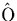
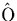

There are other alternative explanations for this defect that need to be investigated. Oxygen dimers are present in the material, and are probably responsible for the 1012 cm-1 absorption line (see Chapter 6); one explanation could be that these are simply diffusing to N pairs and forming N2iO2i defects. It is known that N suppresses thermal donor formation, and the normal explanation for this is that it simply soaks up the Oi by forming NNO defects. However the N2iO2i defect provides an intriguing alternative, whereby if dimer migration is the crucial step in thermal donor formation (see Chapter 9), then thermal donors can be suppressed by trapping these to form N2iO2i.
To investigate this, we relaxed the 151 atom cluster,
Si79H68N2O2, which contains the most likely structure
for NNOO, i.e. the standard [001] split interstitial N2 pair
neighbouring an O2i dimer; the result is a defect lying along
 110
110 , with Cs planar symmetry. The structure is
extremely similar to NNO with the shared Si atoms between the Ni
moved a long way off site and the Oi atoms only slightly distorted
(see Figure 7.8). As expected, it possesses no gap levels.
The furthest Ni has bond lengths of 1.70 Å and 1.76 Å
within the square (bond angle 92
, with Cs planar symmetry. The structure is
extremely similar to NNO with the shared Si atoms between the Ni
moved a long way off site and the Oi atoms only slightly distorted
(see Figure 7.8). As expected, it possesses no gap levels.
The furthest Ni has bond lengths of 1.70 Å and 1.76 Å
within the square (bond angle 92 ) and 1.73 Å outside, with
the inner Ni having lengths of 1.68 and 1.75 Å within the
square and 1.62 Å to the Si neighbouring O. The oxygen nearest
the square bows a long way from its bond centred site (136
) and 1.73 Å outside, with
the inner Ni having lengths of 1.68 and 1.75 Å within the
square and 1.62 Å to the Si neighbouring O. The oxygen nearest
the square bows a long way from its bond centred site (136 Si--Si bond angle), whereas the outer Oi has standard
bond angles with assymetric bond lengths characteristic of the dimer
(see Chapter 6).
Si--Si bond angle), whereas the outer Oi has standard
bond angles with assymetric bond lengths characteristic of the dimer
(see Chapter 6).
This similarity to both the dimer and the N-square suggests that the NNOO defect will not have modes in the correct region, as shown by the calculated values given in Table 7.2. Firstly only two modes are experimentally observed, whereas this NNOO defect has four higher frequency modes. Secondly the experimental oxygen mode is lower than that due to the NN-O defect, but in NNOO the O atom is more compressed and so gives rise to a higher mode. Therefore we can discard the NNOO defect as a model for the two LVMs at 813 and 1020 cm-1.
An alternative structure for the NNOO defect would be one Oi atom at either side of the N2 core, but we have not yet investigated that. This could not be a candidate for the 813 and 1020 cm-1 modes either since it would lead to more than one nitrogen mode.
In addition, the experimental anneals were performed at 600 C,
and the dimer is not expected to be stable at these temperatures (see
Chapter 6). However, if the annealing was repeated at
300-350
C,
and the dimer is not expected to be stable at these temperatures (see
Chapter 6). However, if the annealing was repeated at
300-350 C, then it is possible that this defect would indeed be
observed. This would be an interesting experiment to perform to
confirm the presence of dimers in N doped Si. Such a low temperature
anneal would also provide more information about the mobility of the
N2 pair.
C, then it is possible that this defect would indeed be
observed. This would be an interesting experiment to perform to
confirm the presence of dimers in N doped Si. Such a low temperature
anneal would also provide more information about the mobility of the
N2 pair.